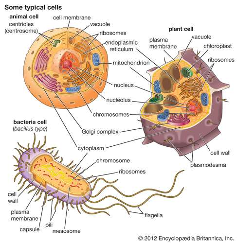
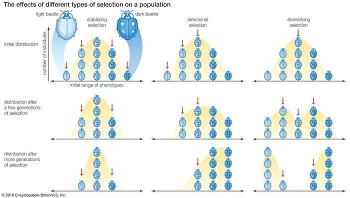

The concept of homeostasis—that living things maintain a constant internal environment—was first suggested in the 19th century by French physiologist Claude Bernard, who stated that “all the vital mechanisms, varied as they are, have only one object: that of preserving constant the conditions of life.” As originally conceived by Bernard, homeostasis applied to the struggle of a single organism to survive. The concept was later extended to include any biological system from the cell to the entire biosphere, all the areas of Earth inhabited by living things.
All living organisms, regardless of their uniqueness, have certain biological, chemical, and physical characteristics in common. All, for example, are composed of basic units known as cells and of the same chemical substances, which, when analyzed, exhibit noteworthy similarities, even in such disparate organisms as bacteria and humans. Furthermore, since the action of any organism is determined by the manner in which its cells interact and since all cells interact in much the same way, the basic functioning of all organisms is also similar.
In his theory of natural selection, which is discussed in greater detail later, Charles Darwin suggested that “survival of the fittest” was the basis for organic evolution (the change of living things with time). Evolution itself is a biological phenomenon common to all living things, even though it has led to their differences. Evidence to support the theory of evolution has come primarily from the fossil record, from comparative studies of structure and function, from studies of embryological development, and from studies of DNA and RNA (ribonucleic acid).
